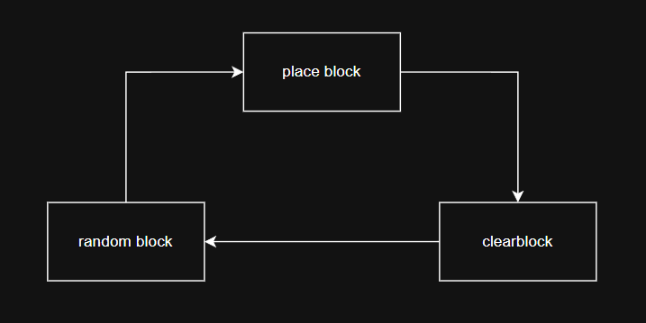

Destroy Block
Algorithm & Grid Logic Implementation
Made with P5js (JavaScript)
Dev by: Teerapuwanai Chanachaisombud , Puwadon Sunreem
Game Logic Overview

Features
What I Learned
Gained experience in managing game data through 2D Array Manipulation and implementing custom game logic without external physics engines. Mastered Coordinate Transformation for mouse-to-grid interaction and developed a reliable Line Clearing Algorithm for grid-based puzzle mechanics.